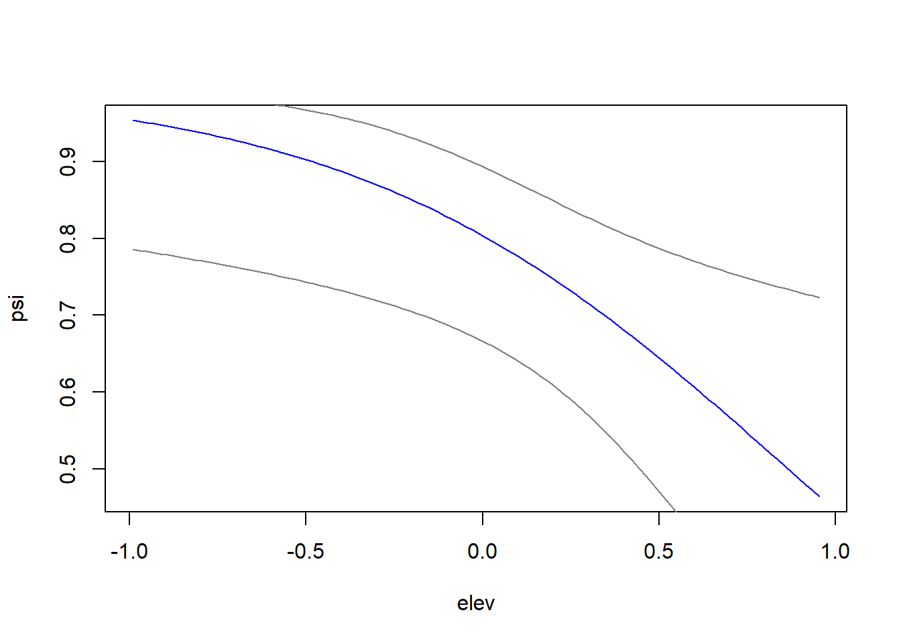

Capítulo 7 Analisis de ocupación, metodo ML
Ya que hemos entendido como funcionan e interactúan los dos procesos; el ecológico y el observacional para producir los datos de ocupación. Luego de generar varios sets de datos, ahora solo nos resta analizarlos. La forma más directa e intuitiva es usar la función occu del paquete unmarked (Fiske and Chandler 2011). Posteriormente podremos usar un modelo de tipo bayesiano en el lenguaje BUGS para analizar los mismos datos y al final comparar cual de los dos estimadores, Máxima Verosimilitud o Bayesiano, se acerca más a los parametros verdaderos.
7.0.1 Limpiando la memoria de R
Antes de continuar, y como ya hemos generado una gran cantidad de datos y modelos en los pasos previos, vamos a borrar la memoria de R antes de comenzar. Esto lo hacemos con el comando:
rm(list = ls())Una vez hayamos hecho esto debemos volver a correr el código de la función que genera los datos que hemos creado el Capítulo 6.
7.1 Generando los datos
Esta vez recurriremos a un diseño tipo TEAM (http://www.teamnetwork.org) con 60 sitios de muestreo y 30 visitas repetidas, que equivalen a los 30 días en que las camaras permanecen activas en campo. De nuevo nuestra especie es el venado de cola blanca. Para este ejemplo asumiremos que la detección es 0.6, la ocupacion 0.8 y las interacciones son mucho más sencillas con la altitud como la unica covariable que explica la ocupación. Sin embargo para la deteccion hay una relación más compleja, asumiendo que hay una leve interacción entre las covariables de la observación. Para la observación la altitud y temperatura interactuan entre si. También observe como la altitud influye en direcciones opuestas con un signo positivo en la altitud para la detección y negativo para la ocupación.
# Data generation
# Lets build a model were elevation explain occupancy and p has interactions
datos2<-data.fn(M = 60, J = 30, show.plot = FALSE,
mean.occupancy = 0.8, beta1 = -1.5, beta2 = 0, beta3 = 0,
mean.detection = 0.6, alpha1 = 2, alpha2 = 1, alpha3 = 1.5
)
# Function to simulate occupancy measurements replicated at M sites during J occasions.
# Population closure is assumed for each site.
# Expected occurrence may be affected by elevation (elev),
# forest cover (forest) and their interaction.
# Expected detection probability may be affected by elevation,
# temperature (temp) and their interaction.
# Function arguments:
# M: Number of spatial replicates (sites)
# J: Number of temporal replicates (occasions)
# mean.occupancy: Mean occurrence at value 0 of occurrence covariates
# beta1: Main effect of elevation on occurrence
# beta2: Main effect of forest cover on occurrence
# beta3: Interaction effect on occurrence of elevation and forest cover
# mean.detection: Mean detection prob. at value 0 of detection covariates
# alpha1: Main effect of elevation on detection probability
# alpha2: Main effect of temperature on detection probability
# alpha3: Interaction effect on detection of elevation and temperature
# show.plot: if TRUE, plots of the data will be displayed;
# set to FALSE if you are running simulations.
#To make the objects inside the list directly accessible to R, without having to address
#them as data$C for instance, you can attach datos2 to the search path.
attach(datos2) # Make objects inside of 'datos2' accessible directly
#Remember to detach the data after use, and in particular before attaching a new data
#object, because more than one data set attached in the search path will cause confusion.
# detach(datos2) # Make clean up7.2 Poniendo los datos en unmarked
Unmarked es el paquete de R que usamos para analizar los datos de ocupacion (Fiske and Chandler 2011). Para lograr esto debemos primero preparar los datos y juntarlos en un objeto de tipo unmarkedFrame. En este caso usamos la funcion unmarkedFrameOccu que es especifica para analisis de ocupacion de una sola epoca o estación. Más sobre unkarked en: https://sites.google.com/site/unmarkedinfo/home
library(unmarked)
siteCovs <- as.data.frame(cbind(forest,elev)) # occupancy covariates
obselev<-matrix(rep(elev,J),ncol = J) # make elevetion per observation
obsCovs <- list(temp= temp,elev=obselev) # detection covariates
# umf is the object joining observations (y), occupancy covariates (siteCovs)
# and detection covariates (obsCovs). Note that obsCovs should be a list of
# matrices or dataframes.
umf <- unmarkedFrameOccu(y = y, siteCovs = siteCovs, obsCovs = obsCovs)7.3 Ajustando los modelos
El siguiente paso es ajustar los modelos que se requerían variando las co variables. Esto se logra con la función occu().
Tenga en cuenta que en el proceso de construcción de modelos su modelo debe tener un significado biológico.
# detection first, occupancy next
fm0 <- occu(~1 ~1, umf) # Null model
fm1 <- occu(~ elev ~ 1, umf) # elev explaining detection
fm2 <- occu(~ elev ~ elev, umf) # elev explaining detection and occupancy
fm3 <- occu(~ temp ~ elev, umf)
fm4 <- occu(~ temp ~ forest, umf)
fm5 <- occu(~ elev + temp ~ 1, umf)
fm6 <- occu(~ elev + temp + elev:temp ~ 1, umf)
fm7 <- occu(~ elev + temp + elev:temp ~ elev, umf)
fm8 <- occu(~ elev + temp + elev:temp ~ forest, umf)7.4 Selección de modelos
Unmarked permite hacer selección de modelos basándose en el AIC de cada uno. De forma tal que el menor AIC es el modelo más parsimonioso de acuerdo a nuestros datos (Burnham and Anderson 2004).
models <- fitList( # here e put names to the models
'p(.)psi(.)' = fm0,
'p(elev)psi(.)' = fm1,
'p(elev)psi(elev)' = fm2,
'p(temp)psi(elev)' = fm3,
'p(temp)psi(forest)' = fm4,
'p(temp+elev)psi(.)' = fm5,
'p(temp+elev+elev:temp)psi(.)' = fm6,
'p(temp+elev+elev:temp)psi(elev)' = fm7,
'p(temp+elev+elev:temp)psi(forest)' = fm8)
modSel(models) # model selection procedure## nPars AIC delta AICwt cumltvWt
## p(temp+elev+elev:temp)psi(elev) 6 1656.53 0.00 8.2e-01 0.82
## p(temp+elev+elev:temp)psi(.) 5 1660.22 3.69 1.3e-01 0.95
## p(temp+elev+elev:temp)psi(forest) 6 1662.16 5.63 4.9e-02 1.00
## p(temp+elev)psi(.) 4 1706.82 50.29 9.9e-12 1.00
## p(elev)psi(elev) 4 1723.88 67.35 2.0e-15 1.00
## p(elev)psi(.) 3 1727.56 71.03 3.1e-16 1.00
## p(temp)psi(elev) 4 1954.97 298.43 1.3e-65 1.00
## p(temp)psi(forest) 4 1960.57 304.04 7.8e-67 1.00
## p(.)psi(.) 2 1979.67 323.14 5.6e-71 1.007.5 Predicción en graficas
El modelo con menor AIC puede ser usado para predecir resultados esperados de acuerdo a un nuevo set de datos. Por ejemplo, uno podría preguntar la abundancia de venados que se espera encontrar en un sitio con mayor altitud. La predicciones también son otra forma de presentar los resultados de un análisis. Aquí ilustraremos como se ve la predicción de \(\psi\) y p sobre el rango de las covariables estudiadas. Note que estamos usando covariables estandarizadas. Si estuviéramos usando covariables en su escala real, tendríamos que tener en cuenta que hay que transformarlas usando la media y la desviación estándar.
Antes de usar el modelo para predecir es buena idea verificar los parámetros del modelo y sus errores, posteriormente verificar que el modelo ajusta bien con la función parboot, la cual hace un remuestreo del modelo y se interpreta como que el modelo tiene buen ajuste, cuando la media (línea punteada) está entre los intervalos del histograma.
summary(fm7) # see the model parameters##
## Call:
## occu(formula = ~elev + temp + elev:temp ~ elev, data = umf)
##
## Occupancy (logit-scale):
## Estimate SE z P(>|z|)
## (Intercept) 1.18 0.326 3.62 0.000291
## elev -1.41 0.624 -2.26 0.023548
##
## Detection (logit-scale):
## Estimate SE z P(>|z|)
## (Intercept) 0.407 0.0735 5.54 3.03e-08
## elev 2.140 0.1494 14.32 1.66e-46
## temp 0.900 0.1262 7.14 9.68e-13
## elev:temp 1.680 0.2514 6.68 2.34e-11
##
## AIC: 1656.533
## Number of sites: 60
## optim convergence code: 0
## optim iterations: 37
## Bootstrap iterations: 0pb <- parboot(fm7, nsim=250, report=10) # goodness of fit## t0 = 393.9606
## 385.8,378.2,386.5,354.1,394.2,368.9,381.6,370.9,395.6,370.2
## 399.6,378.9,376.5,382.1,383.8,403.7,377.1,369.9,378.9,371
## 367.3,384.7,383,367.9,357.8,367.2,384.5,387,393.3,372.8
## 374.2,389.6,402.1,393.1,400.4,388.6,393.5,382.3,399.3,367.7
## 394.3,369.2,384.2,394.5,393.1,403.7,395.8,366.2,382.6,392
## 392.2,388.5,394.1,386.2,387.4,397.6,406.5,392.8,388.2,396.6
## 377.1,381,376.9,368.5,369.8,394.9,379.1,388.4,364.6,384.9
## 379.6,379.1,399.3,388.2,395.7,385.8,407.1,355.2,370.7,391.5
## 376.2,398.4,383.4,393.9,382.7,368.3,402.2,389.2,395.1,393.8
## 366.7,372.4,387.1,379.7,404,377.9,392.8,400.7,394.6,388.2
## 395.6,383.4,372.3,363.1,331.1,377.2,376,384.8,397.5,379.2
## 357.2,383.1,394.5,375.7,386.3,388.6,383.2,364.4,384.6,380.9
## 379,384.1,367.1,354.1,376.2,379.6,403.3,385.5,376,382.9
## 382.6,384.1,393.5,394.9,383.7,366.2,386.3,385.4,379,360.1
## 379.4,391.8,387.3,385.6,387.2,390.5,387.5,388.2,382.7,382.6
## 386.3,389.3,371.2,369.6,374.7,380.7,392.7,395.8,374.9,395.6
## 382.7,369.3,376.9,386.8,359.4,384.5,380.9,357.3,390.8,394.1
## 407.8,374.9,386,402.4,379.1,373.2,398.7,380.4,386.7,381.6
## 377.1,364.6,382.7,389.7,381.6,392.5,379.6,395.8,389.6,389.5
## 375.4,390.1,363.6,392.5,353.4,389.9,387.9,380.8,388.7,381.5
## 391.9,389.3,381,371.5,362.8,361.8,405.6,384.5,386.4,390.7
## 390,380.7,391.6,379.1,397.6,384.7,369.4,376.7,391.1,386.9
## 389.8,375.4,360.5,390.2,388.9,366.3,393.4,358.4,377.8,382.1
## 392.1,382,387.1,400.9,406.7,372.6,392.4,371.4,374.7,378.2
## 365.8,383.4,375.3,376.5,384.8,388.9,395.4,400.9,376.7,383.2plot (pb) # plot goodness of fitAhora que sabemos que nuestro mejor modelo tiene buen ajuste, podemos usarlo para predecir la ocupación en el rango de la altitud para ver su comportamiento en una gráfica.
elevrange<-data.frame(elev=seq(min(datos2$elev),max(datos2$elev),length=100)) # newdata
pred_psi <-predict(fm7,type="state",newdata=elevrange,appendData=TRUE)
plot(Predicted~elev, pred_psi,type="l",col="blue",
xlab="elev",
ylab="psi")
lines(lower~elev, pred_psi,type="l",col=gray(0.5))
lines(upper~elev, pred_psi,type="l",col=gray(0.5))
7.6 Predicción espacialmente explicita
Podemos también usar el mejor modelo para predecir de forma espacialmente explicita si tenemos los mapas. Como ilustración vamos a construir mapas simulados para cada una de nuestras covariables. Los mapas surgen de un patrón aleatorio de puntos con distribución Poisson. Luego estos puntos los convertimos en una superficie interpolada.
# lets make random maps for the three covariates
library(raster)
library(spatstat)
set.seed(24) # Remove for random simulations
# CONSTRUCT ANALYSIS WINDOW USING THE FOLLOWING:
xrange=c(-2.5, 1002.5)
yrange=c(-2.5, 502.5)
window<-owin(xrange, yrange)
# Build maps from random points and interpole in same line
elev <- density(rpoispp(lambda=0.6, win=window)) #
forest <- density(rpoispp(lambda=0.2, win=window)) #
temp <- density(rpoispp(lambda=0.5, win=window)) #
# Convert covs to raster and Put in the same stack
mapdata.m<-stack(raster(elev),raster(forest), raster(temp))
names(mapdata.m)<- c("elev", "forest", "temp") # put names to raster
# lets plot the covs maps
plot(mapdata.m)
Una vez tenemos nuestros mapas de covariables, los usamos para predecir con el mejor modelo. De esta forma podemos tener un mapa con predicciones de la ocupación y la probabilidad de detección.
# make the predictions
predictions_psi <- predict(fm7, type="state", newdata=mapdata.m) # predict psi## doing row 1000 of 16384
## doing row 2000 of 16384
## doing row 3000 of 16384
## doing row 4000 of 16384
## doing row 5000 of 16384
## doing row 6000 of 16384
## doing row 7000 of 16384
## doing row 8000 of 16384
## doing row 9000 of 16384
## doing row 10000 of 16384
## doing row 11000 of 16384
## doing row 12000 of 16384
## doing row 13000 of 16384
## doing row 14000 of 16384
## doing row 15000 of 16384
## doing row 16000 of 16384predictions_p <- predict(fm7, type="det", newdata=mapdata.m) # predict p## doing row 1000 of 16384
## doing row 2000 of 16384
## doing row 3000 of 16384
## doing row 4000 of 16384
## doing row 5000 of 16384
## doing row 6000 of 16384
## doing row 7000 of 16384
## doing row 8000 of 16384
## doing row 9000 of 16384
## doing row 10000 of 16384
## doing row 11000 of 16384
## doing row 12000 of 16384
## doing row 13000 of 16384
## doing row 14000 of 16384
## doing row 15000 of 16384
## doing row 16000 of 16384# put in the same stack
predmaps<-stack(predictions_psi$Predicted,predictions_p$Predicted)
names(predmaps)<-c("psi_predicted", "p_predicted") # put names
plot(predmaps)
References
Fiske, Ian, and Richard Chandler. 2011. “unmarked : An R Package for fitting hierarchical models of wildlife occurrence and abundance.” Journal of Statistical Software 43 (10): 1–23. doi:10.18637/jss.v043.i10.
Burnham, Kenneth P, and David R Anderson. 2004. “Information and likelihood theory: A basis for model selection and inference.” In Model Selection and Multimodel Inference: A Practical Information-Theoretic Approach, edited by Kenneth P Burnham and David R Anderson, 49–97. New York: Springer New York. http://link.springer.com/chapter/10.1007%2F978-0-387-22456-5_2.